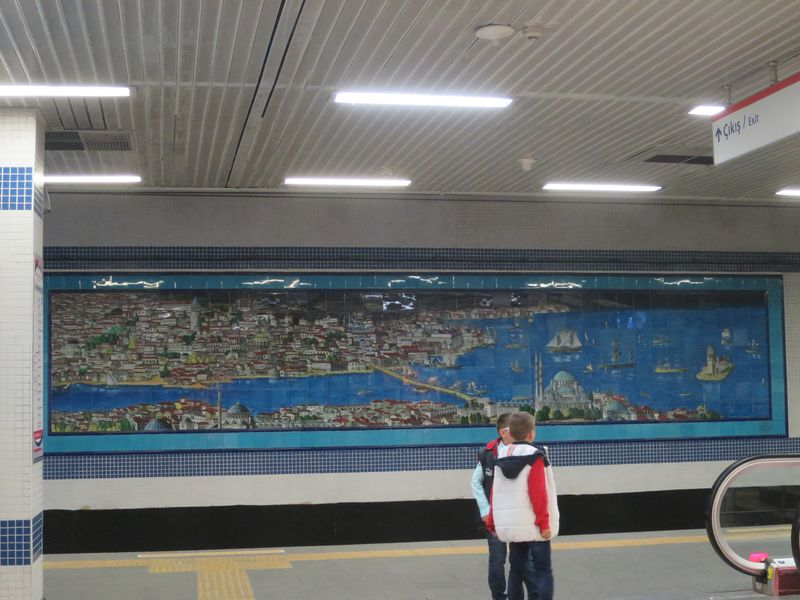
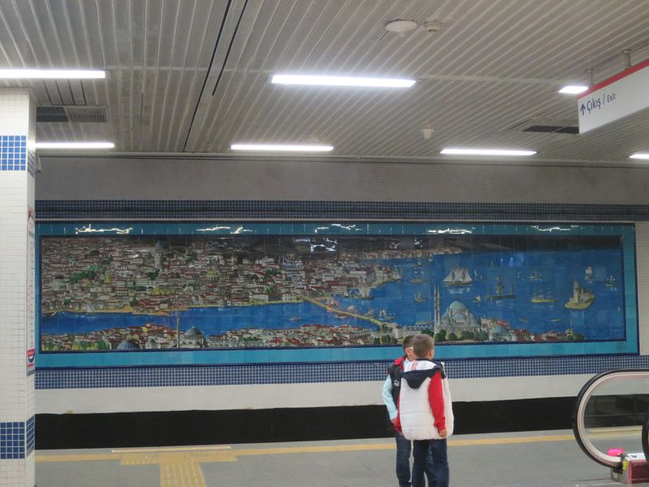
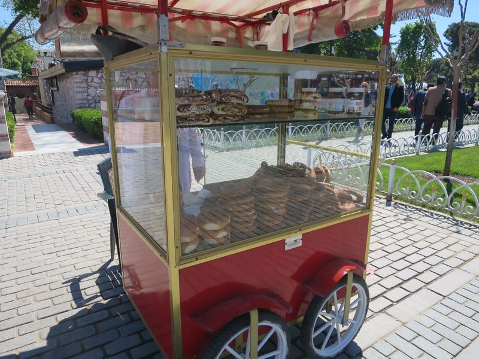
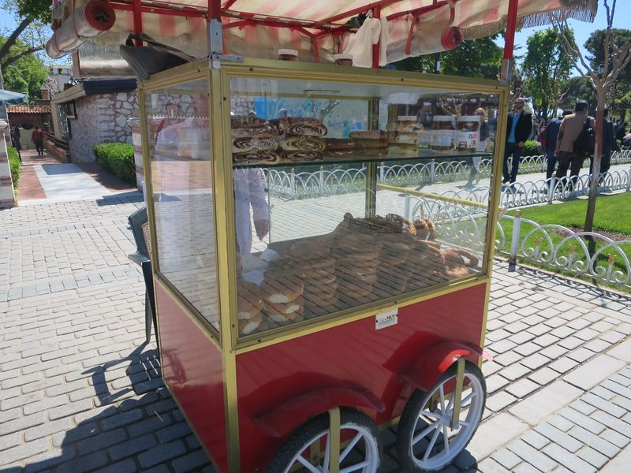

今次去土耳其旅行，乘 Turkish Airline 由香港直飛 Istanbul，終於不用轉機，直航十小時夜機對我來說最好不過，一埋位就睡到降落前那一餐，發覺張餐牌是 Batman v Superman，記得好型的 wonder woman 又搭又唔搭嘅就係土耳其航班，呢個宣傳同無線嘅直入式廣告有得 fight。
下機才早上五時多，入境後去大堂 ATM，又是香港一些銀行提款卡取消了世界通行的 PLUS、而強逼人用強國銀聯的問題！最低 B 是連當地的 HSBC ATM 也提款不了，幸好還是有一部 ING 的機用到。真係嬲嬲地遲啲搵返間有 PLUS 嘅轉晒啲錢過去。
預訂了的 hostel 位於 Sultanahmet 區，4 TL (Turkish Lira) 機場搭 Metro 去 Zeytinburnu 站再 4 TL 搭 Tram 去到 Sultanahmet 就得。之後至知有 Instanbul 卡，可以增值同每程平啲，不過是但，同埋按金都成 7 TL 好似冇得退，費事煩。
Hostel 叫 Mansion by Cheers，揀佢係因為佢有單人房，係收單人價，其他的都要逼你一人付二人房的價。位置是有一點難找，但其實好方便。去到太早，沒人，在裏面大廰坐，等到八時多，終於有人來，好像是準備早餐的員工。他們很熱情，又請飲茶又問你食唔食嘢。坐在那裏休息下，聽他們和食早餐的客人傾談。
放下大背囊，出去睇 Blue Mosque 同 Aya Sofya，Blue Mosque 好似冇乜印象… 是很大，不過之後看的都差不多大。Aya Sofya 就正，以前係教堂，之後變了清真寺，而家是一座博物館。入場費好似都成 40 TL，我買了 Instanbul Musuem Pass，可以五天內任去很多的博物館，包括我這兩天一定去的 Aya Sofya、皇宮和一些博物館，而張 pass 只售 85 TL、之後發覺還有一張是全國博物館的 pass，105 TL，限時十多天，仲抵，淨係 Aya Sofya Topkapı 連 後宮 同 考古博物館 都超過呢個價，之後去 Cappdocia 嘅一啲 open-air museum 又可以用。
在 Aya Sofya 售票處買了 museum pass，要 passport 登記。入場前有個人問我要不要導遊，100 TL 連入場費。不過得我一個人沒人 share 太貴。其實沒有導遊是差好遠的，一個普通人又怎能一時三刻懂得如何去遊這座建築物，建築風格和歷史等，都是靠書上那數十行文字的簡單描寫。場內有露天餐廳，進入買杯土耳其啡，成 8 TL，原來是此行最貴的一杯，不過第一次買唔知價，一杯細細的啡，有一半是咖啡渣，可以飲的好少，另又有一杯水，唔知要嚟做乜，之後至知。
Aya Sofya 已經是最多人遊的地方，但今天卻不算多人，我當時其實沒有為意遊客少這個現象。看完之後行去 EMINONU 那區找吃，食店選擇比 Sultanahmet 多和便宜，有 2TL 就買到的新鮮橙汁，EMINONU 海邊 Galata 橋底一帶有 Balık-ekmek (魚柳包) 吃，8 TL 一件。
陽光好猛好熱，下午去逛考古博物館避避，不過行完幾個場館都還是日光白白，在室外一些椅坐，發現原來這裏的貓十分多，走來走去。休息到夠，但好像沒什麼做似的，又想明天才去皇宮，很無聊，事實上這和我的心情很有關係，我早已經沒有什麼動力，一切，包括自己的存在，已經不再覺得有趣有意義。
然後，在 Blue Mosque 外面的廣場，遇到了一個人，他問我時間，然後和我傾談，又說未去過 Taksim 想去，不如一齊去之類，然後我們行過去，行到天黑，去到 Taksim，食飯，但我見 Taksim 區那些很高級的餐廳好像很貴，不想去，但他說他請我，我不好意思，結果只係食少少，但他真的請我，然後，他要喝啤酒，我本來不想，但結果還是喝了，然後我埋單，當然是超貴的啤。
其實我都不是第一次咁白痴，仲要，其實在 wiki travel 明明看過這些 warning，但是，一去到新地方，就離奇地將警覺降到零，又變得超級天真。
他用了很多時間和心機，我不知當中什麼是真或假，但不重要，事實是，我是因為他的說話，和他的傾談，才像被人當頭棒喝，我才可以再次用心去看這個世界，才能再次看得見一些美好的東西。起碼，令我不再停留在覺得死了也不可惜的狀態。而這改變，卻是因為一個騙子，真的很矛盾很諷刺。
回 hostel 途中，又遇到一個自稱來自 Cyprus 的人要我幫他拍照，然後又是想一起去飲酒。
雖然回到 hostel 睡前的心情仍然是很奇怪，我還不介意告訴了 hostel 的老闆我的蠢事，不介事別人取笑，但其實，之後的旅途上，我不時想起那個人的說話來勉勵或提醒自己，心底裏還竟然感激起來，是不是很變態？
 



 



2016 Turkey Next ❯